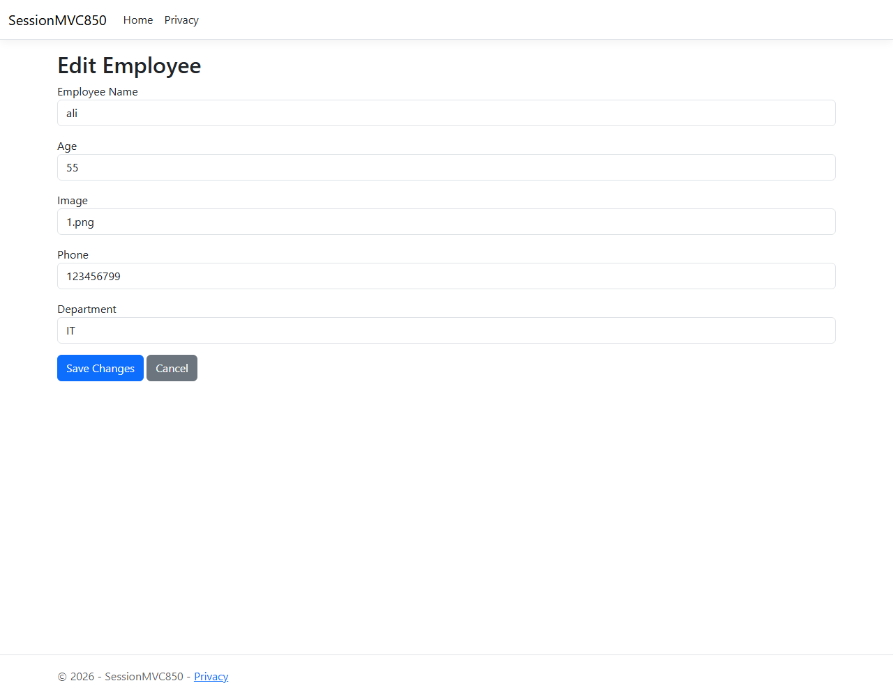

SessionMVC850 · ASP.NET Core MVC · الدليل بالعربية
asp-for و asp-action). لكل طريقة سترى
الكود، وما الذي تنتجه، ومزاياها، ومشاكلها.

.cshtml.يحتوي النموذج على خمسة حقول — الاسم (Name)،
العمر (Age)، الصورة (Image)،
الهاتف (Phone)، القسم (Department) — بالإضافة إلى
Id مخفي. يرسل النموذج إلى /Employee/SaveEdit، ويعود زر
الإلغاء إلى /Employee.
تكتب HTML عاديًا. القاعدة الوحيدة المهمة في MVC هي الخاصية name: يجب أن
تطابق اسم خاصية الموديل حتى يتمكن Model Binding من تعبئة Employee عند إرسال
النموذج.
@model SessionMVC850.Models.Employee
@{
ViewData["Title"] = "Edit Employee";
}
<h2>Edit Employee</h2>
<form action="/Employee/SaveEdit" method="post">
<input type="hidden" name="Id" value="@Model.Id" />
<div class="mb-3">
<label for="Name">Employee Name</label>
<input type="text" id="Name" name="Name" class="form-control"
placeholder="Enter employee name" value="@Model.Name" />
</div>
<div class="mb-3">
<label for="age">Age</label>
<input type="number" id="age" name="age" class="form-control"
placeholder="Enter age" value="@Model.age" />
</div>
<div class="mb-3">
<label for="Image">Image</label>
<input type="text" id="Image" name="Image" class="form-control"
placeholder="Enter image path" value="@Model.Image" />
</div>
<div class="mb-3">
<label for="Phone">Phone</label>
<input type="text" id="Phone" name="Phone" class="form-control"
placeholder="Enter phone number" value="@Model.Phone" />
</div>
<div class="mb-3">
<label for="DeptId">Department</label>
<select id="DeptId" name="DeptId" class="form-control">
@foreach (var department in (IEnumerable<Department>)ViewBag.Departments)
{
if (department.Id == Model.DeptId)
{
<option value="@department.Id" selected>@department.Name</option>
}
else
{
<option value="@department.Id">@department.Name</option>
}
}
</select>
</div>
<button type="submit" class="btn btn-primary">Save Changes</button>
<a href="/Employee" class="btn btn-secondary">Cancel</a>
</form><input type="text" id="Name" name="Name" class="form-control"
placeholder="Enter employee name" value="ali" />name="Name" و
name="DeptId" لا يتحقق منها المترجم. أي خطأ إملائي يفسد الربط بصمت.action="/Employee/SaveEdit" تتعطل إذا
تغيّر المسار أو عمل التطبيق تحت path base.if/else
للخاصية selected مع كل قائمة منسدلة.Employee.Name
لا يحدّث name="Name".بدلًا من كتابة الوسوم، تستدعي مساعدات مثل Html.TextBox و
Html.Label و Html.DropDownList وتمرر اسم الخاصية
كنص (string). المساعد يولّد HTML نيابة عنك.
@model SessionMVC850.Models.Employee
@{
ViewData["Title"] = "Edit Employee";
}
<h2>Edit Employee</h2>
@using (Html.BeginForm("SaveEdit", "Employee", FormMethod.Post))
{
@Html.Hidden("Id", Model.Id)
<div class="mb-3">
@Html.Label("Name", "Employee Name")
@Html.TextBox("Name", Model.Name, new { @class = "form-control", placeholder = "Enter employee name" })
</div>
<div class="mb-3">
@Html.Label("age", "Age")
@Html.TextBox("age", Model.age, new { @class = "form-control", type = "number", placeholder = "Enter age" })
</div>
<div class="mb-3">
@Html.Label("Image", "Image")
@Html.TextBox("Image", Model.Image, new { @class = "form-control", placeholder = "Enter image path" })
</div>
<div class="mb-3">
@Html.Label("Phone", "Phone")
@Html.TextBox("Phone", Model.Phone, new { @class = "form-control", placeholder = "Enter phone number" })
</div>
<div class="mb-3">
@Html.Label("DeptId", "Department")
@Html.DropDownList("DeptId",
new SelectList((IEnumerable<Department>)ViewBag.Departments,
"Id", "Name", Model.DeptId),
new { @class = "form-control" })
</div>
<button type="submit" class="btn btn-primary">Save Changes</button>
@Html.ActionLink("Cancel", "Index", "Employee", null, new { @class = "btn btn-secondary" })
}Html.BeginForm("SaveEdit", "Employee", FormMethod.Post) يبني رابط النموذج
من التوجيه بدل كتابته ثابتًا. وSelectList يأخذ مصدر البيانات، وحقل القيمة
(Id)، وحقل النص (Name)، والقيمة المحددة
(Model.DeptId).
<input type="text" id="Name" name="Name" class="form-control"
placeholder="Enter employee name" value="ali" />id و name صحيحين من النص.BeginForm و ActionLink يولّدان الروابط من جدول التوجيه."Name" و "DeptId"
لا يتحقق منها المترجم ولا IntelliSense.Html.TextBox("Nmae", ...) ينتج حقلًا لا يرتبط بالموديل أبدًا.تمرر تعبير lambda (m => m.Name) بدلًا من نص. يتحقق
المترجم من الخاصية، ويساعدك IntelliSense في اختيارها، وتغيير اسم الخاصية يحدّث المساعد
تلقائيًا.
@model SessionMVC850.Models.Employee
@{
ViewData["Title"] = "Edit Employee";
}
<h2>Edit Employee</h2>
@using (Html.BeginForm("SaveEdit", "Employee", FormMethod.Post))
{
@Html.HiddenFor(m => m.Id)
<div class="mb-3">
@Html.LabelFor(m => m.Name, "Employee Name")
@Html.TextBoxFor(m => m.Name, new { @class = "form-control", placeholder = "Enter employee name" })
@Html.ValidationMessageFor(m => m.Name, "", new { @class = "text-danger" })
</div>
<div class="mb-3">
@Html.LabelFor(m => m.age, "Age")
@Html.TextBoxFor(m => m.age, new { @class = "form-control", type = "number", placeholder = "Enter age" })
</div>
<div class="mb-3">
@Html.LabelFor(m => m.Image, "Image")
@Html.TextBoxFor(m => m.Image, new { @class = "form-control", placeholder = "Enter image path" })
</div>
<div class="mb-3">
@Html.LabelFor(m => m.Phone, "Phone")
@Html.TextBoxFor(m => m.Phone, new { @class = "form-control", placeholder = "Enter phone number" })
</div>
<div class="mb-3">
@Html.LabelFor(m => m.DeptId, "Department")
@Html.DropDownListFor(m => m.DeptId,
new SelectList((IEnumerable<Department>)ViewBag.Departments, "Id", "Name"),
new { @class = "form-control" })
</div>
<button type="submit" class="btn btn-primary">Save Changes</button>
@Html.ActionLink("Cancel", "Index", "Employee", null, new { @class = "btn btn-secondary" })
}@Html.TextBoxFor(m => m.Name, ...) بـ
@Html.EditorFor(m => m.Name, new { htmlAttributes = new { @class = "form-control" } }).
يختار EditorFor المحرر بناءً على نوع الخاصية و DataAnnotations، لكنه قد يضيف
وسوم حاوية إضافية.
<input type="text" id="Name" name="Name" class="form-control"
placeholder="Enter employee name" value="ali"
data-val="true" data-val-required="The Name field is required." />For.DropDownListFor يحدد DeptId الحالي تلقائيًا.EditorFor قد يضيف
عناصر حاوية.DropDownListFor يحتاج SelectList وخاصية
ViewBag أو موديل لعناصر القائمة.asp-for و asp-actionتسمح لك مساعدات الوسوم بالاحتفاظ بوسوم HTML عادية، ثم تضيف خصائص
asp-*. يعالجها MVC على الخادم ويكتب HTML الصحيح.
Views/_ViewImports.cshtml يحتوي:
@addTagHelper *, Microsoft.AspNetCore.Mvc.TagHelpers@model SessionMVC850.Models.Employee
@{
ViewData["Title"] = "Edit Employee";
}
<h2>Edit Employee</h2>
<form asp-controller="Employee" asp-action="SaveEdit" method="post">
<input type="hidden" asp-for="Id" />
<div class="mb-3">
<label asp-for="Name" class="form-label">Employee Name</label>
<input asp-for="Name" class="form-control" placeholder="Enter employee name" />
<span asp-validation-for="Name" class="text-danger"></span>
</div>
<div class="mb-3">
<label asp-for="age" class="form-label">Age</label>
<input asp-for="age" class="form-control" type="number" placeholder="Enter age" />
</div>
<div class="mb-3">
<label asp-for="Image" class="form-label">Image</label>
<input asp-for="Image" class="form-control" placeholder="Enter image path" />
</div>
<div class="mb-3">
<label asp-for="Phone" class="form-label">Phone</label>
<input asp-for="Phone" class="form-control" placeholder="Enter phone number" />
</div>
<div class="mb-3">
<label asp-for="DeptId" class="form-label">Department</label>
<select asp-for="DeptId" class="form-control"
asp-items="@(new SelectList((IEnumerable<Department>)ViewBag.Departments, "Id", "Name"))">
</select>
</div>
<button type="submit" class="btn btn-primary">Save Changes</button>
<a asp-controller="Employee" asp-action="Index" class="btn btn-secondary">Cancel</a>
</form>
@section Scripts {
<partial name="_ValidationScriptsPartial" />
}asp-*؟| الخاصية | الغرض |
|---|---|
asp-for |
ربط مقيّد بالنوع: يولّد id و name و
value وخصائص التحقق من خاصية الموديل. |
asp-validation-for |
يعرض رسالة التحقق لخاصية واحدة. |
asp-action |
يولّد رابط إجراء باستخدام التوجيه (بدون مسار ثابت). |
asp-controller |
يختار المتحكم لـ asp-action. اختياري عندما يكون هو المتحكم
الحالي. |
asp-items |
يملأ <select> بخيارات من SelectList. |
asp-route-id |
يضيف قيمة مسار (تُستخدم في الروابط، مثل
asp-action="Details" asp-route-id="@item.Id"). |
asp-for + asp-items أفضل من القائمة اليدوية؟
asp-for="DeptId" يحدد تلقائيًا الخيار الذي تساوي قيمته
Model.DeptId كمختار. لم تعد بحاجة إلى if/else والخاصية
selected.
<form action="/Employee/SaveEdit" method="post">
...
<input type="text" id="Name" name="Name" class="form-control"
placeholder="Enter employee name" value="ali"
data-val="true" data-val-required="The Name field is required." />
...
</form>@section Scripts تعرض
_ValidationScriptsPartial. يحمّل هذا الجزء مكتبة jQuery Validation، لذا
تعرض asp-validation-for الرسائل في المتصفح دون إعادة تحميل الصفحة.
asp-for يتحقق منه المترجم و
IntelliSense.asp-action و asp-controller
يولّدان الروابط من التوجيه بدل النصوص الثابتة.asp-for + asp-items.@addTagHelper؛ بدونه تُتجاهل خصائص
asp-* ويتعطل النموذج بصمت.asp-items يتوقع SelectList /
IEnumerable<SelectListItem>، ما يحتاج تحويلًا صريحًا مع
ViewBag.| الميزة | HTML العادي | مساعدات غير مقيّدة | مساعدات مقيّدة | مساعدات الوسوم |
|---|---|---|---|---|
| التحقق وقت الترجمة | لا | لا (نصوص) | نعم | نعم |
| IntelliSense للخصائص | لا | لا | نعم | نعم |
| إعادة هيكلة آمنة | لا | لا | نعم | نعم |
توليد id / name تلقائيًا |
يدوي | نعم | نعم | نعم |
| توليد الروابط من التوجيه | يدوي | BeginForm / ActionLink |
BeginForm / ActionLink |
asp-action / asp-controller |
| خصائص التحقق التلقائية | يدوي | محدود | نعم | نعم |
| تحديد الخيار المختار تلقائيًا | يدوي if/else |
تمرير القيمة المحددة | نعم | نعم |
| التحكم في HTML الدقيق | كامل | متوسط | منخفض–متوسط | عالٍ |
| الإسهاب | عالٍ | متوسط | عالٍ | منخفض |
| منحنى التعلم | منخفض | متوسط | متوسط | منخفض–متوسط |
ملف Edit.cshtml الذي أرفقته يخلط عدة طرق معًا، ما يسبب حقولًا مكررة
وسلوكًا مربكًا:
| المشكلة | لماذا هي مشكلة | الحل |
|---|---|---|
@ViewData["Title"] قبل @model |
يفضل أن يبدأ ملف Razor بـ @model أولًا. |
ضع @model SessionMVC850.Models.Employee في السطر الأول. |
ViewData["Title"] مكرر |
زائد ومربك. | احتفظ بكتلة @{
ViewData["Title"] = "Edit Employee";
} واحدة فقط. |
خمسة عناصر تحكم كلها باسم Name / Id="Name" |
EditorFor و LabelFor وتسمية asp-for و
TextBoxFor و TextBox("Name") تُعرض كلها معًا. تكرار
id غير صالح والقيمة المرسلة غير متوقعة. |
اختر طريقة واحدة واحتفظ بحقل واحد لكل خاصية. |
Html.TextBox("Name", null, placeholder = "Enter age") |
الاسم Name لكن placeholder يقول age؛ كما يكرر حقل الاسم. |
استخدم Html.TextBox("age", Model.age, ...) أو الأفضل
<input asp-for="age" ... />. |
action="/Employee/SaveEdit" ثابت |
يتعطل إذا تغيّر التوجيه أو path base. | استخدم asp-action="SaveEdit" asp-controller="Employee" أو
Html.BeginForm. |
| لا توجد رسائل تحقق | لا يحصل المستخدم على تغذية راجعة عند وجود خطأ. | أضف <span asp-validation-for="Name"></span> أو
@Html.ValidationMessageFor(...). |
منطق selected يدوي للقائمة |
يعمل، لكنه متكرر ويسهل نسيانه. | استخدم <select asp-for="DeptId" asp-items="...">. |
name، وهما أساس كل شيء آخر.asp-for و
asp-items و asp-action و asp-controller
تمنحك الأمان و HTML نظيفًا.لتحويل صفحة المشروع إلى النسخة الموصى بها، استبدل محتوى
Views/Employee/Edit.cshtml بمثال مساعدات الوسوم من القسم 4. لا يحتاج إجراء
المتحكم ودالة EmployeeBL.Update إلى أي تغيير: ما زالا يستقبلان نفس كائن
Employee.